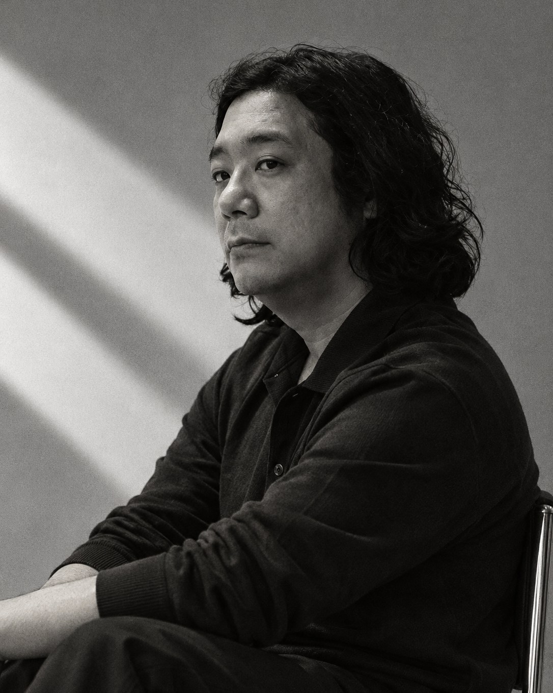

블렌딩Blending
블렌딩은 원료의 성격을 읽고 비율로 균형을 잡는 일입니다. 차 블렌더와 로스터, 두 사람의 원칙에서 스물한 가지 레시피가 나왔고, 그 위에서 당신의 비율이 시작됩니다.

같은 재료,
비율만 바꿨을 뿐인데.
왼쪽은 캐모마일 두 스푼, 오른쪽은 민들레 뿌리 두 스푼. 커피에 싱글 오리진이 있다면, 차의 세계에서는 여러 원료의 장점을 합쳐 더 풍성한 향과 맛의 조화를 만드는 것이 자연스럽습니다.
오늘은 조금 더 향긋하게, 어떤 날은 조금 더 고소하게. 같은 재료도 비율이 달라지면 전혀 다른 한 잔이 됩니다. 정답은 없습니다. 취향은 그렇게 발견됩니다.
두 사람의 원칙에서
시작했습니다.
「취향의 권리」는 차 블렌딩의 원칙과 로스팅의 경험을 바탕으로 설계했습니다. 원료의 성격을 읽고 비율로 균형을 잡아 온 블렌더와, 16년째 불을 다뤄 온 로스터. 레시피 스물한 가지는 모두 두 사람의 시음을 거쳐 골랐습니다.


이소연
찻잎과 허브의 결을 읽어 여러 기업의 한 잔을 설계하고, 그 감각을 가르쳐 온 블렌더. 저서 『11시와 4시, 나는 차를 마신다』(라온북 2020), 『Life in My Teacup』(OHK 2024).

양진호
16년째 로스팅을 이어 오며 많은 커피 전문가를 길러 낸 로스터. 블루리본서베이 15년 연속 선정 로스터리 대표, Sprudge · Time Out Seoul이 주목한 서울 스페셜티 로스터.
“전문가에게는 원칙을,
소비자에게는 취향의 권리를.”
향을 맡고, 고르고, 섞고,
우리고, 기록합니다.

고르기CHOOSE
아코디언북을 펼쳐 오늘의 기분에 맞는 원료를 고릅니다. 처음엔 레시피대로, 익숙해지면 하나를 더하거나 덜어서.

담기MEASURE
레시피 비율대로 원료를 덜어 빈 티백에 담습니다. 종이 스쿱 한 스푼이 기준. 비율의 작은 차이가 한 잔을 바꿉니다.
붓기POUR
레시피의 온도로 물을 천천히 붓습니다. 허브는 95~100°C, 곡물은 100°C. 향이 먼저 올라옵니다.

우리기STEEP
레시피의 시간만큼 우립니다. 색이 바뀌는 순간을 지켜보세요. Taste는 3~5분, Depth는 7분.
기록하기NOTE
좋았던 비율과 다음에 바꿔 볼 것을 노트에 남깁니다. 노트에 남긴 비율이 당신의 레시피가 됩니다.
처음엔, 전문가의 비율에서
시작하세요.
4,000가지가 넘는 조합 중에서 직접 시음해 고른 스물한 가지가 키트에 함께 들어 있습니다. 그중 두 가지를 먼저 소개합니다.
- 캐모마일 ●●
- 장미 ●
- 레몬밤 ●
150ml
3~5분
- 단팥 ●●
- 캐모마일 ●◐
- 현미 ●
- 둥굴레 ●
150ml
7분
그리고 그다음 레시피는, 당신의 것입니다.